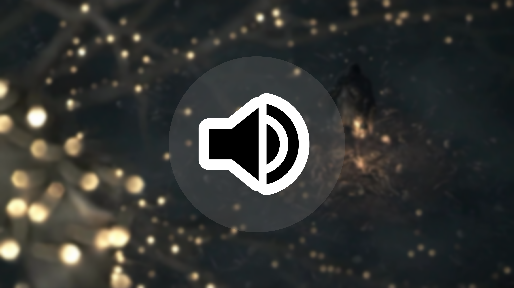

Film-Audio
2023

In the Sound Design Challenge, you take any video, remove its audio, and recreate it. The new audio track can be an approximation of the original sound or a completely reimagined version.
I decided to use the Dark Souls 2 opening cinematic, taking an interesting segment and removing its sound. In Reaper, I created a new audio track. Throughout the whole process, I never listened to the original audio again, as I wanted to work purely from my intuition based on what I saw in the video.
I got the new sound effects from FreeSound and FreeSound and WeLoveIndies.